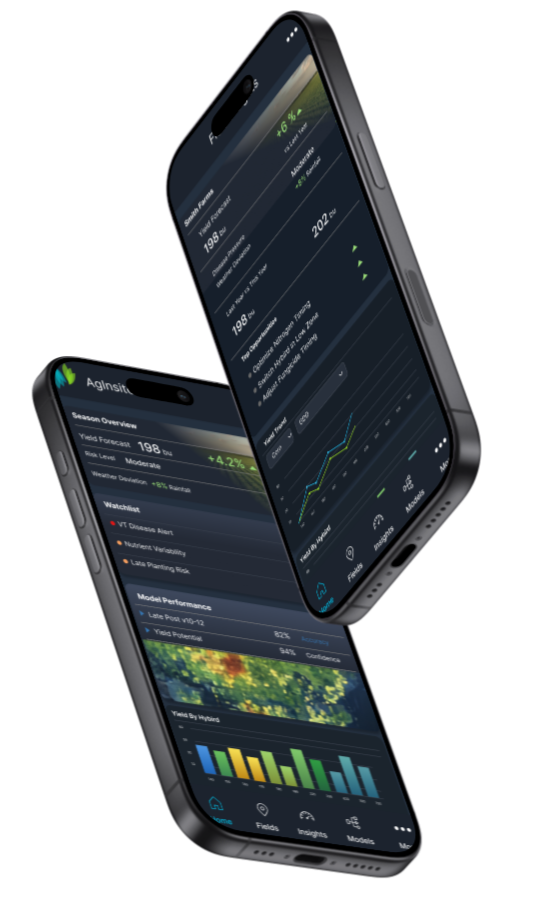

Ryan Shea / UX and product design
Product strategy. UX systems. AI-enabled delivery
I help organizations simplify enterprise software by aligning product strategy, UX, research, AI workflows, and engineering into repeatable systems that scale.

Product strategy
Turning ambiguous business needs into clear product direction.
UX systems
Patterns, documentation, and design operations that scale across teams.
Research alignment
Customer insight translated into practical decisions and delivery plans.
AI-enabled delivery
Workflow structures that help teams move from intent to implementation faster.